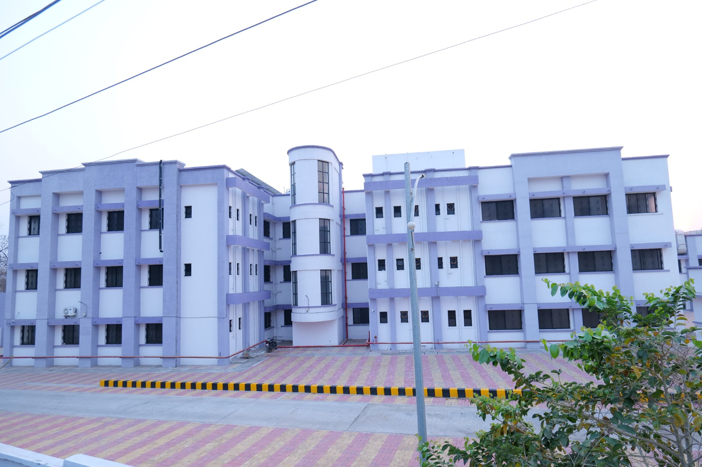
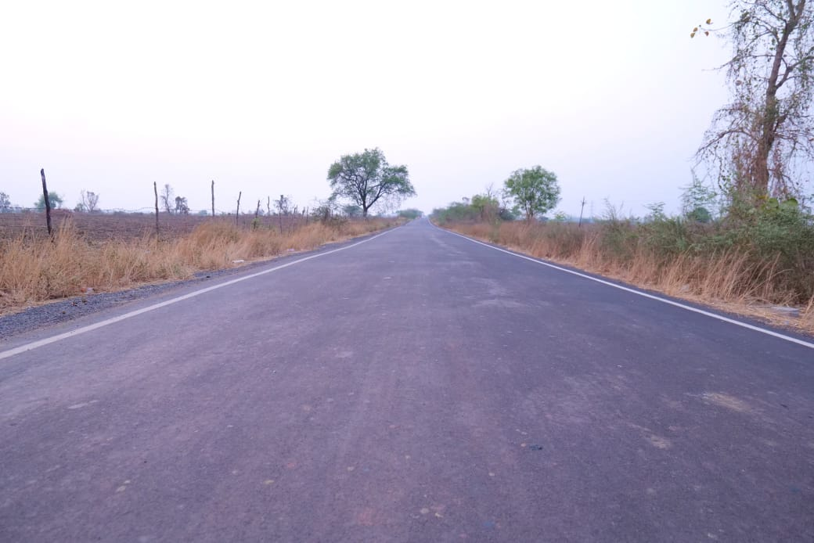

100 Beded hospital project
मौजा अहेरी येथे 100 खाटांचे स्त्री व नवजात अभ्रक रुग्णालयाचे बांधकाम

Road Project
अहेरी महागाव सुभाषनगर रस्ता लांबी १०.०० कि.मी. सदर रस्ता राष्ट्रीय महामार्ग ३५३ सि ला जोडल्यामुळे अहेरी व आजुबाजुच्या गावाकरिता गडचिरोली व चंद्रपूर येथे जाण्याकरिता सोईचे झाले आहे